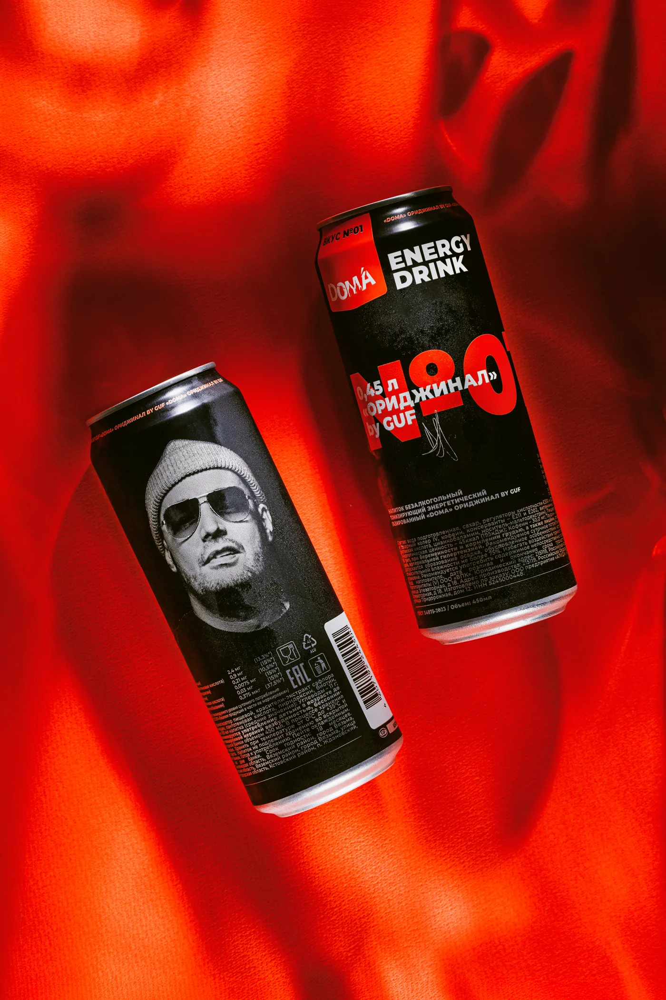
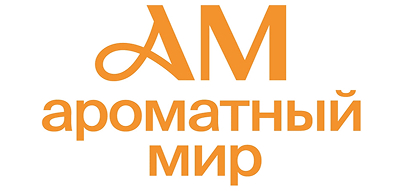

Яркие вкусы, которые хочется пробовать снова и снова — от классики до смелых сочетаний
Мы создаём вкусы, которые запоминаются с первого раза
Энергетики, чипсы, сухарики и освежающий мохито — всё, что нужно для твоего ритма. Для учёбы, работы, вечеринки, поездки или катки с друзьями
Мы создаём вкусы, которые запоминаются с первого раза
Качество уровня «вау» по цене «легко могу позволить»
Красиво снаружи — вкусно внутри
Удобный перекус дома, на работе, в дороге или после тренировки

Мы создаём вкусы, которые запоминаются с первого раза
Качество уровня «вау» по цене «легко могу позволить»
Красиво снаружи — вкусно внутри
Удобный перекус дома, на работе, в дороге или после тренировки
Выбирай удобный способ покупки и наслаждайся любимыми вкусами

Мы открыты для сотрудничества. Давай делать крутые проекты вместе
Остались вопросы, хотите предложить сотрудничество или запросить прайс-лист? Оставь заявку и мы обязательно свяжемся с тобой!